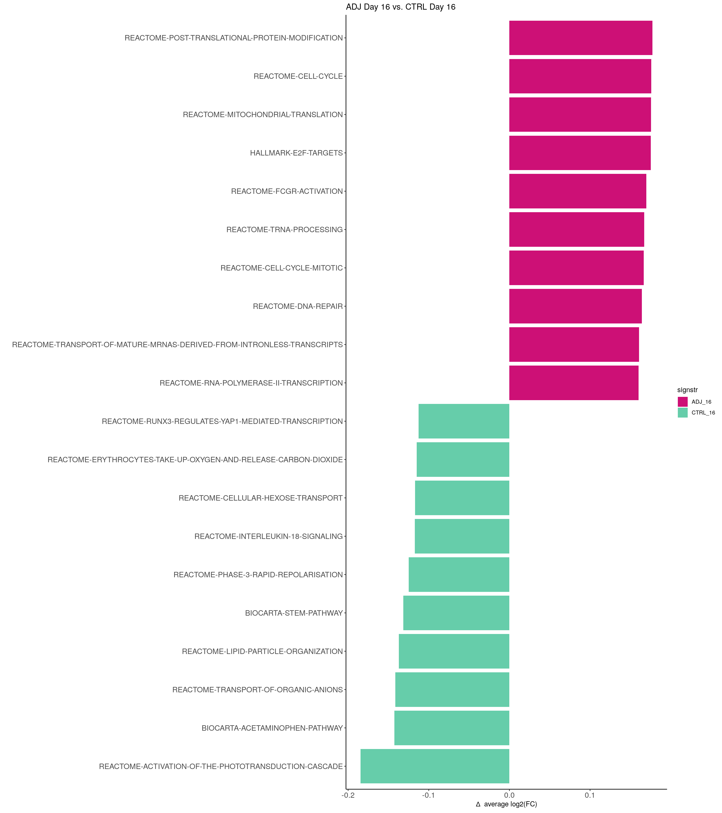
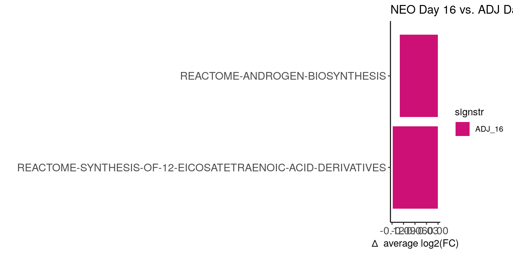
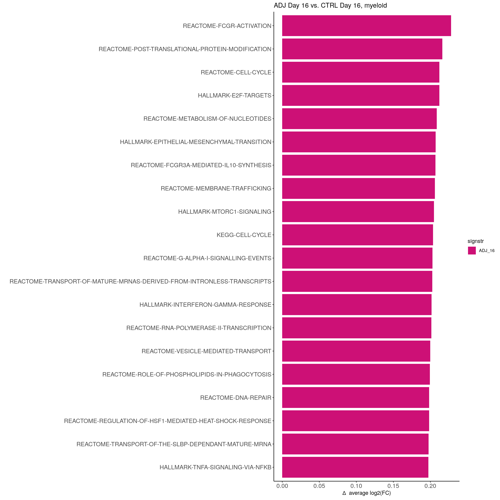
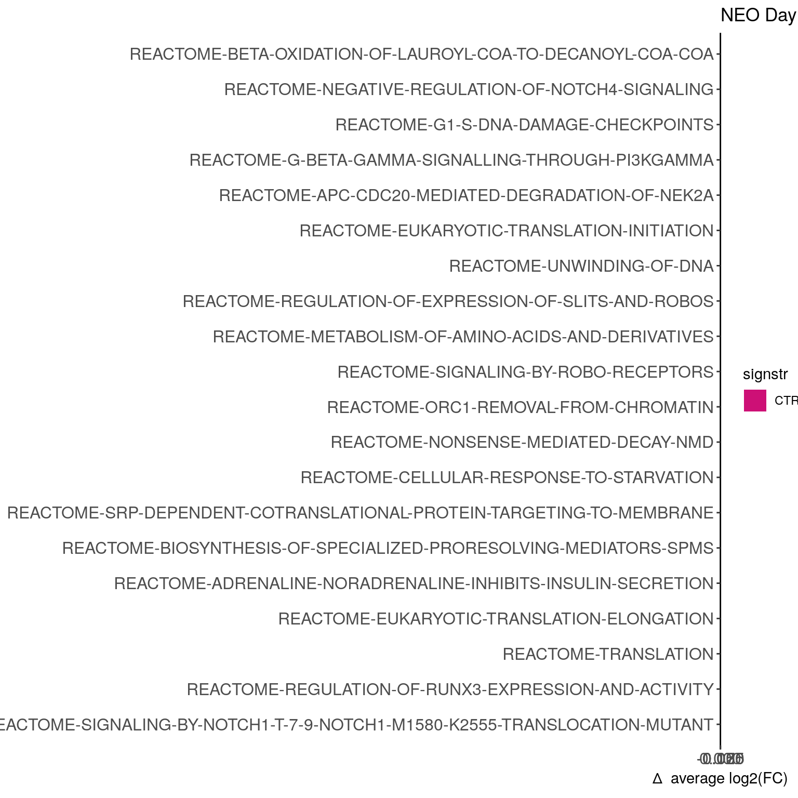
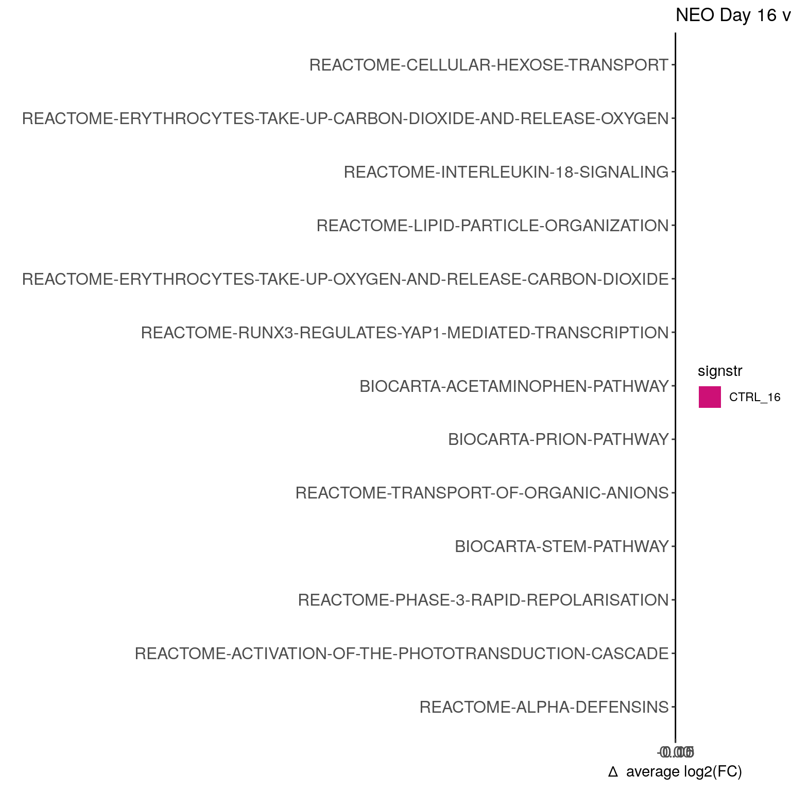
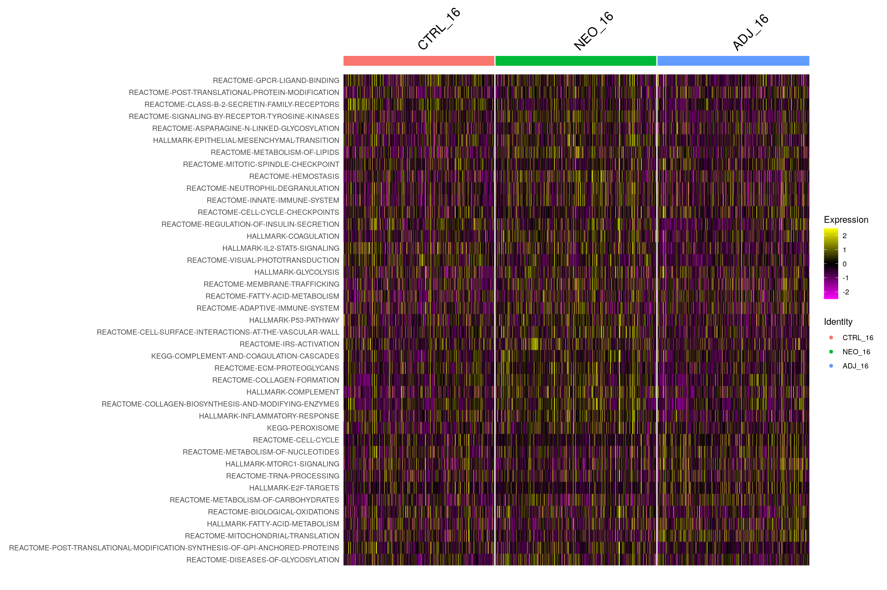

GSEA pathway analysis on the Kluc tumor CD45+ scRNAseq data
heinin
2024-03-22
Last updated: 2025-04-18
Checks: 5 2
Knit directory: PD1_mm/
This reproducible R Markdown analysis was created with workflowr (version 1.7.1). The Checks tab describes the reproducibility checks that were applied when the results were created. The Past versions tab lists the development history.
The R Markdown file has unstaged changes. To know which version of
the R Markdown file created these results, you’ll want to first commit
it to the Git repo. If you’re still working on the analysis, you can
ignore this warning. When you’re finished, you can run
wflow_publish to commit the R Markdown file and build the
HTML.
Great job! The global environment was empty. Objects defined in the global environment can affect the analysis in your R Markdown file in unknown ways. For reproduciblity it’s best to always run the code in an empty environment.
The command set.seed(20240223) was run prior to running
the code in the R Markdown file. Setting a seed ensures that any results
that rely on randomness, e.g. subsampling or permutations, are
reproducible.
Great job! Recording the operating system, R version, and package versions is critical for reproducibility.
Nice! There were no cached chunks for this analysis, so you can be confident that you successfully produced the results during this run.
Using absolute paths to the files within your workflowr project makes it difficult for you and others to run your code on a different machine. Change the absolute path(s) below to the suggested relative path(s) to make your code more reproducible.
| absolute | relative |
|---|---|
| /home/hnatri/PD1_mm/ | . |
| /home/hnatri/PD1_mm/code/utilities.R | code/utilities.R |
| /home/hnatri/PD1_mm/code/PD1_mm_themes.R | code/PD1_mm_themes.R |
| /home/hnatri/PD1_mm/code/CART_plot_functions.R | code/CART_plot_functions.R |
Great! You are using Git for version control. Tracking code development and connecting the code version to the results is critical for reproducibility.
The results in this page were generated with repository version bd872d1. See the Past versions tab to see a history of the changes made to the R Markdown and HTML files.
Note that you need to be careful to ensure that all relevant files for
the analysis have been committed to Git prior to generating the results
(you can use wflow_publish or
wflow_git_commit). workflowr only checks the R Markdown
file, but you know if there are other scripts or data files that it
depends on. Below is the status of the Git repository when the results
were generated:
Untracked files:
Untracked: .RDataTmp
Untracked: Rplots.pdf
Untracked: code/CellChat.Rout
Untracked: code/GSEA.Rout
Untracked: code/slurm.11539547.err
Untracked: code/slurm.11539547.out
Untracked: code/slurm.19866474.err
Untracked: code/slurm.19866474.out
Untracked: code/slurm.19866736.err
Untracked: code/slurm.19866736.out
Untracked: code/slurm.19866957.err
Untracked: code/slurm.19866957.out
Untracked: code/slurm.19867399.err
Untracked: code/slurm.19867399.out
Untracked: code/slurm.19872309.err
Untracked: code/slurm.19872309.out
Unstaged changes:
Modified: GSEA_myeloid_celltype_sig.tsv
Modified: GSEA_myeloid_sig.tsv
Modified: analysis/CellChat.Rmd
Modified: analysis/GSEA.Rmd
Modified: analysis/comparative_analysis.Rmd
Modified: code/CellChat.R
Modified: code/GSEA.R
Note that any generated files, e.g. HTML, png, CSS, etc., are not included in this status report because it is ok for generated content to have uncommitted changes.
These are the previous versions of the repository in which changes were
made to the R Markdown (analysis/GSEA.Rmd) and HTML
(docs/GSEA.html) files. If you’ve configured a remote Git
repository (see ?wflow_git_remote), click on the hyperlinks
in the table below to view the files as they were in that past version.
| File | Version | Author | Date | Message |
|---|---|---|---|---|
| html | bd872d1 | heinin | 2024-07-06 | Build site. |
| Rmd | 25561e8 | heinin | 2024-07-06 | wflow_publish(c("analysis/GO.Rmd", "analysis/GSEA.Rmd")) |
| Rmd | 7c73c80 | heinin | 2024-05-06 | Added GO analysis |
| html | 7c73c80 | heinin | 2024-05-06 | Added GO analysis |
| html | 2e7906a | heinin | 2024-03-24 | Build site. |
| Rmd | b97dfb7 | heinin | 2024-03-24 | analysis/index.Rmd |
Introduction
Running GSEA for each cell and comparing between groups.
Packages and environment variables
suppressPackageStartupMessages({
library(Seurat)
library(SeuratObject)
library(SeuratDisk)
library(tidyverse)
library(tibble)
library(ggplot2)
library(ggpubr)
library(ggrepel)
library(workflowr)
library(dittoSeq)
library(googlesheets4)
library(escape)
library(pheatmap)})
setwd("/home/hnatri/PD1_mm/")
set.seed(9999)
options(ggrepel.max.overlaps = Inf)
# Colors, themes, cell type markers, and plot functions
source("/home/hnatri/PD1_mm/code/utilities.R")
source("/home/hnatri/PD1_mm/code/PD1_mm_themes.R")
source("/home/hnatri/PD1_mm/code/CART_plot_functions.R")Importing data
#seurat_data <- readRDS("/tgen_labs/banovich/BCTCSF/PD1_mm_Seurat/PD1_mm_Seurat_merged.Rds")
#seurat_data$Treatment_Day <- paste0(seurat_data$Treatment, "_", seurat_data$Day)Running GSEA using R/escape
GSEA was run using code/GSEA.R.
Importing GSEA outputs
seurat_data <- readRDS("/tgen_labs/banovich/BCTCSF/PD1_mm_Seurat/PD1_mm_Seurat_GSEA.Rds")
seurat_data <- subset(seurat_data, subset = Day == 16)
sort(as.character(unique(seurat_data$celltype))) [1] "B1" "B2" "DC" "L1" "L2" "L3" "L4" "L5" "L6"
[10] "M1" "M2" "M3" "M4" "M5" "M6" "M7" "Neut1" "NK"
[19] "NOS1" "Treg" seurat_data$Treatment_Day <- factor(seurat_data$Treatment_Day, levels = c("CTRL_16", "NEO_16", "ADJ_16"))
Idents(seurat_data) <- seurat_data$Treatment_DayDifferentially activated pathways between ADJ and NEO, all cell types, Day 16
gsea_res <- FindMarkers(seurat_data,
assay = "escapeGSVA_normalized",
ident.1 = "NEO_16",
ident.2 = "ADJ_16",
min.pct = 0,
logfc.threshold = 0)
gsea_res$pathway <- rownames(gsea_res)
#head(gsea_res)
#hist(gsea_res$avg_log2FC)
#hist(gsea_res$p_val_adj)
res_sig <- gsea_res %>% filter(abs(avg_log2FC) > 0.1,
p_val_adj < 0.05)
res_sig %>%
#arrange(c("p_val_adj", avg_log2FC)) %>%
#filter(dense_rank(avg_log2FC) <= 10 | dense_rank(desc(avg_log2FC)) <= 10) %>%
#filter(abs(avg_log2FC) > 0.1) %>%
mutate(sign = sign(avg_log2FC),
signstr = if_else(sign == 1, "ADJ_16", "NEO_16")) %>%
ggplot(aes(x = avg_log2FC, y = reorder(pathway, avg_log2FC), fill = signstr)) +
geom_bar(stat = "identity") +
#geom_col(width = 0.85) +
scale_fill_manual(values = c("deeppink3", "aquamarine3")) +
theme_classic() +
#manuscript_theme +
ylab("") +
xlab(expression(Delta ~ " average log2(FC)")) +
ggtitle("ADJ Day 16 vs. NEO Day 16")Differentially activated pathways between NEO and CTRL, all cell types, Day 16
gsea_res <- FindMarkers(seurat_data,
assay = "escapeGSVA_normalized",
ident.1 = "NEO_16",
ident.2 = "CTRL_16",
min.pct = 0,
logfc.threshold = 0)
gsea_res$pathway <- rownames(gsea_res)
res_sig <- gsea_res %>% filter(abs(avg_log2FC) > 0.1,
p_val_adj < 0.05)
res_sig %>%
#filter(abs(avg_log2FC) > 0.15) %>%
filter(dense_rank(avg_log2FC) <= 10 | dense_rank(desc(avg_log2FC)) <= 10) %>%
mutate(sign = sign(avg_log2FC),
signstr = if_else(sign == 1, "NEO_16", "CTRL_16")) %>%
ggplot(aes(x = avg_log2FC, y = reorder(pathway, avg_log2FC), fill = signstr)) +
geom_bar(stat = "identity") +
#geom_col(width = 0.85) +
scale_fill_manual(values = c("deeppink3", "aquamarine3")) +
theme_classic() +
#manuscript_theme +
ylab("") +
xlab(expression(Delta ~ " average log2(FC)")) +
ggtitle("NEO Day 16 vs. CTRL Day 16")
Differentially activated pathways between ADJ and CTRL, all cell types, Day 16
gsea_res <- FindMarkers(seurat_data,
assay = "escapeGSVA_normalized",
ident.1 = "ADJ_16",
ident.2 = "CTRL_16",
min.pct = 0,
logfc.threshold = 0)
gsea_res$pathway <- rownames(gsea_res)
res_sig <- gsea_res %>% filter(abs(avg_log2FC) > 0.1,
p_val_adj < 0.05)
res_sig %>%
#filter(abs(avg_log2FC) > 0.15) %>%
filter(dense_rank(avg_log2FC) <= 10 | dense_rank(desc(avg_log2FC)) <= 10) %>%
mutate(sign = sign(avg_log2FC),
signstr = if_else(sign == 1, "ADJ_16", "CTRL_16")) %>%
ggplot(aes(x = avg_log2FC, y = reorder(pathway, avg_log2FC), fill = signstr)) +
geom_bar(stat = "identity") +
#geom_col(width = 0.85) +
scale_fill_manual(values = c("deeppink3", "aquamarine3")) +
theme_classic() +
#manuscript_theme +
ylab("") +
xlab(expression(Delta ~ " average log2(FC)")) +
ggtitle("ADJ Day 16 vs. CTRL Day 16")
Differentially activated pathways between NEO and CTRL, all cell types, Day 12
gsea_res <- FindMarkers(seurat_data,
assay = "escapeGSVA_normalized",
ident.1 = "NEO_12",
ident.2 = "CTRL_12",
min.pct = 0,
logfc.threshold = 0)
gsea_res$pathway <- rownames(gsea_res)
res_sig <- gsea_res %>% filter(abs(avg_log2FC) > 0.1,
p_val_adj < 0.05)
res_sig %>%
#filter(abs(avg_log2FC) > 0.15) %>%
filter(dense_rank(avg_log2FC) <= 10 | dense_rank(desc(avg_log2FC)) <= 10) %>%
#filter(dense_rank(abs(avg_log2FC)) <= 20) %>%
mutate(sign = sign(avg_log2FC),
signstr = if_else(sign == 1, "NEO_12", "CTRL_12")) %>%
ggplot(aes(x = avg_log2FC, y = reorder(pathway, avg_log2FC), fill = signstr)) +
geom_bar(stat = "identity") +
#geom_col(width = 0.85) +
scale_fill_manual(values = c("deeppink3", "aquamarine3")) +
theme_classic() +
#manuscript_theme +
ylab("") +
xlab(expression(Delta ~ " average log2(FC)")) +
ggtitle("NEO Day 12 vs. CTRL Day 12")Significance testing across myeloid celltypes (M1-7, Neut)
NEO vs. ADJ, Day 16
unique(seurat_data$celltype)
myeloid <- subset(seurat_data, subset = celltype %in% c(grep("^M", unique(seurat_data$celltype), value = T), c("Neut1")))
gsea_res <- FindMarkers(myeloid,
assay = "escapeGSVA_normalized",
ident.1 = "NEO_16",
ident.2 = "ADJ_16",
min.pct = 0,
logfc.threshold = 0)
gsea_res$pathway <- rownames(gsea_res)
res_sig <- gsea_res %>% filter(abs(avg_log2FC) > 0.1,
p_val_adj < 0.05)
res_sig %>%
#filter(abs(avg_log2FC) > 0.1) %>%
filter(dense_rank(avg_log2FC) <= 10 | dense_rank(desc(avg_log2FC)) <= 10) %>%
mutate(sign = sign(avg_log2FC),
signstr = if_else(sign == 1, "NEO_16", "ADJ_16")) %>%
ggplot(aes(x = avg_log2FC, y = reorder(pathway, avg_log2FC), fill = signstr)) +
geom_bar(stat = "identity") +
#geom_col(width = 0.85) +
scale_fill_manual(values = c("deeppink3", "aquamarine3")) +
theme_classic() +
#manuscript_theme +
ylab("") +
xlab(expression(Delta ~ " average log2(FC)")) +
ggtitle("NEO Day 16 vs. ADJ Day 16, myeloid")
NEO vs. CTRL, Day 16
gsea_res <- FindMarkers(myeloid,
assay = "escapeGSVA_normalized",
ident.1 = "NEO_16",
ident.2 = "CTRL_16",
min.pct = 0,
logfc.threshold = 0)
gsea_res$pathway <- rownames(gsea_res)
res_sig <- gsea_res %>% filter(abs(avg_log2FC) > 0.1,
p_val_adj < 0.05)
res_sig %>%
#filter(abs(avg_log2FC) > 0.15) %>%
filter(dense_rank(rev(avg_log2FC)) <= 20) %>% #| dense_rank(desc(avg_log2FC)) <= 10) %>%
mutate(sign = sign(avg_log2FC),
signstr = if_else(sign == 1, "NEO_16", "CTRL_16")) %>%
ggplot(aes(x = avg_log2FC, y = reorder(pathway, avg_log2FC), fill = signstr)) +
geom_bar(stat = "identity") +
#geom_col(width = 0.85) +
scale_fill_manual(values = c("deeppink3", "aquamarine3")) +
theme_classic() +
#manuscript_theme +
ylab("") +
xlab(expression(Delta ~ " average log2(FC)")) +
ggtitle("NEO Day 16 vs. CTRL Day 16, myeloid")
ADJ vs. CTRL, Day 16
gsea_res <- FindMarkers(myeloid,
assay = "escapeGSVA_normalized",
ident.1 = "ADJ_16",
ident.2 = "CTRL_16",
min.pct = 0,
logfc.threshold = 0)
gsea_res$pathway <- rownames(gsea_res)
res_sig <- gsea_res %>% filter(abs(avg_log2FC) > 0.1,
p_val_adj < 0.05)
res_sig %>%
#filter(abs(avg_log2FC) > 0.15) %>%
filter(dense_rank(desc(avg_log2FC)) <= 20) %>%
mutate(sign = sign(avg_log2FC),
signstr = if_else(sign == 1, "ADJ_16", "CTRL_16")) %>%
ggplot(aes(x = avg_log2FC, y = reorder(pathway, avg_log2FC), fill = signstr)) +
geom_bar(stat = "identity") +
#geom_col(width = 0.85) +
scale_fill_manual(values = c("deeppink3", "aquamarine3")) +
theme_classic() +
#manuscript_theme +
ylab("") +
xlab(expression(Delta ~ " average log2(FC)")) +
ggtitle("ADJ Day 16 vs. CTRL Day 16, myeloid")
NEO vs. CTRL, Day 12
gsea_res <- FindMarkers(myeloid,
assay = "escapeGSVA_normalized",
ident.1 = "NEO_12",
ident.2 = "CTRL_12",
min.pct = 0,
logfc.threshold = 0)
gsea_res$pathway <- rownames(gsea_res)
res_sig <- gsea_res %>% filter(abs(avg_log2FC) > 0.1,
p_val_adj < 0.05)
res_sig %>%
#filter(abs(avg_log2FC) > 0.15) %>%
filter(dense_rank(avg_log2FC) <= 16 | dense_rank(desc(avg_log2FC)) <= 4) %>%
mutate(sign = sign(avg_log2FC),
signstr = if_else(sign == 1, "NEO_12", "CTRL_12")) %>%
ggplot(aes(x = avg_log2FC, y = reorder(pathway, avg_log2FC), fill = signstr)) +
geom_bar(stat = "identity") +
#geom_col(width = 0.85) +
scale_fill_manual(values = c("deeppink3", "aquamarine3")) +
theme_classic() +
#manuscript_theme +
ylab("") +
xlab(expression(Delta ~ " average log2(FC)")) +
ggtitle("NEO Day 12 vs. CTRL Day 12, myeloid")Significance testing across lymphoid celltypes (L1-6, Treg, NK)
NEO vs. ADJ, Day 16
unique(seurat_data$celltype)
lymphoid <- subset(seurat_data, subset = celltype %in% c(grep("^L", unique(seurat_data$celltype), value = T), c("NK", "Treg")))
gsea_res <- FindMarkers(lymphoid,
assay = "escapeGSVA_normalized",
ident.1 = "NEO_16",
ident.2 = "ADJ_16",
min.pct = 0,
logfc.threshold = 0)
gsea_res$pathway <- rownames(gsea_res)
res_sig <- gsea_res %>% filter(abs(avg_log2FC) > 0.1,
p_val_adj < 0.05)
res_sig %>%
#filter(abs(avg_log2FC) > 0.15) %>%
filter(dense_rank(desc(avg_log2FC)) <= 20) %>%
mutate(sign = sign(avg_log2FC),
signstr = if_else(sign == 1, "NEO_16", "ADJ_16")) %>%
ggplot(aes(x = avg_log2FC, y = reorder(pathway, avg_log2FC), fill = signstr)) +
geom_bar(stat = "identity") +
#geom_col(width = 0.85) +
scale_fill_manual(values = c("deeppink3", "aquamarine3")) +
theme_classic() +
#manuscript_theme +
ylab("") +
xlab(expression(Delta ~ " average log2(FC)")) +
ggtitle("NEO Day 16 vs. ADJ Day 16, lymphoid")
NEO vs. CTRL, Day 16
gsea_res <- FindMarkers(lymphoid,
assay = "escapeGSVA_normalized",
ident.1 = "NEO_16",
ident.2 = "CTRL_16",
min.pct = 0,
logfc.threshold = 0)
gsea_res$pathway <- rownames(gsea_res)
res_sig <- gsea_res %>% filter(abs(avg_log2FC) > 0.1,
p_val_adj < 0.05)
res_sig %>%
#filter(abs(avg_log2FC) > 0.15) %>%
filter(dense_rank(avg_log2FC) <= 10 | dense_rank(desc(avg_log2FC)) <= 10) %>%
mutate(sign = sign(avg_log2FC),
signstr = if_else(sign == 1, "NEO_16", "CTRL_16")) %>%
ggplot(aes(x = avg_log2FC, y = reorder(pathway, avg_log2FC), fill = signstr)) +
geom_bar(stat = "identity") +
#geom_col(width = 0.85) +
scale_fill_manual(values = c("deeppink3", "aquamarine3")) +
theme_classic() +
#manuscript_theme +
ylab("") +
xlab(expression(Delta ~ " average log2(FC)")) +
ggtitle("NEO Day 16 vs. CTRL Day 16, lymphoid")
ADJ vs. CTRL, Day 16
gsea_res <- FindMarkers(lymphoid,
assay = "escapeGSVA_normalized",
ident.1 = "ADJ_16",
ident.2 = "CTRL_16",
min.pct = 0,
logfc.threshold = 0)
gsea_res$pathway <- rownames(gsea_res)
res_sig <- gsea_res %>% filter(abs(avg_log2FC) > 0.1,
p_val_adj < 0.05)
res_sig %>%
#filter(abs(avg_log2FC) > 0.15) %>%
filter(dense_rank(avg_log2FC) <= 10 | dense_rank(desc(avg_log2FC)) <= 10) %>%
mutate(sign = sign(avg_log2FC),
signstr = if_else(sign == 1, "ADJ_16", "CTRL_16")) %>%
ggplot(aes(x = avg_log2FC, y = reorder(pathway, avg_log2FC), fill = signstr)) +
geom_bar(stat = "identity") +
#geom_col(width = 0.85) +
scale_fill_manual(values = c("deeppink3", "aquamarine3")) +
theme_classic() +
#manuscript_theme +
ylab("") +
xlab(expression(Delta ~ " average log2(FC)")) +
ggtitle("NEO Day 16 vs. CTRL Day 16, lymphoid")
Heatmaps
Myeloid
myeloid_res <- FindAllMarkers(myeloid,
assay = "escapeGSVA_normalized",
return.thresh = 0.01,
logfc.threshold = 0.5,
min.pct = 0.20,
only.pos = T,
verbose = F)
myeloid_res$pathway <- rownames(myeloid_res)
myeloid_res_sig <- myeloid_res %>% filter(abs(avg_log2FC) > 0.1,
p_val_adj < 0.05)
plot_features <- myeloid_res_sig %>% group_by(cluster) %>% slice_max(order_by = abs(avg_log2FC), n = 20)
# Subset for heatmap
myeloid_subset <- subset(myeloid, downsample = 30000/length(unique(myeloid$celltype)))
myeloid_subset <- ScaleData(myeloid_subset,
assay = "escapeGSVA_normalized")
DoHeatmap(
myeloid_subset,
features = unique(plot_features$gene),
group.by = "Treatment_Day",
group.bar = TRUE,
assay = "escapeGSVA_normalized")
Lymphoid
lymphoid_res <- FindAllMarkers(lymphoid,
assay = "escapeGSVA_normalized",
return.thresh = 0.01,
logfc.threshold = 0.5,
min.pct = 0.20,
only.pos = T,
verbose = F)
lymphoid_res$pathway <- rownames(lymphoid_res)
lymphoid_res_sig <- lymphoid_res %>% filter(abs(avg_log2FC) > 0.1,
p_val_adj < 0.05)
plot_features <- lymphoid_res_sig %>% group_by(cluster) %>% slice_max(order_by = abs(avg_log2FC), n = 20)
# Subset for heatmap
lymphoid_subset <- subset(lymphoid, downsample = 30000/length(unique(lymphoid$celltype)))
lymphoid_subset <- ScaleData(lymphoid_subset,
assay = "escapeGSVA_normalized")
DoHeatmap(
lymphoid_subset,
features = unique(plot_features$gene),
group.by = "Treatment_Day",
group.bar = TRUE,
assay = "escapeGSVA_normalized")
sessionInfo()R version 4.3.0 (2023-04-21)
Platform: x86_64-pc-linux-gnu (64-bit)
Running under: Ubuntu 22.04.3 LTS
Matrix products: default
BLAS: /usr/lib/x86_64-linux-gnu/openblas-pthread/libblas.so.3
LAPACK: /usr/lib/x86_64-linux-gnu/openblas-pthread/libopenblasp-r0.3.20.so; LAPACK version 3.10.0
locale:
[1] LC_CTYPE=en_US.UTF-8 LC_NUMERIC=C
[3] LC_TIME=en_US.UTF-8 LC_COLLATE=en_US.UTF-8
[5] LC_MONETARY=en_US.UTF-8 LC_MESSAGES=en_US.UTF-8
[7] LC_PAPER=en_US.UTF-8 LC_NAME=C
[9] LC_ADDRESS=C LC_TELEPHONE=C
[11] LC_MEASUREMENT=en_US.UTF-8 LC_IDENTIFICATION=C
time zone: Etc/UTC
tzcode source: system (glibc)
attached base packages:
[1] grid stats graphics grDevices utils datasets methods
[8] base
other attached packages:
[1] ComplexHeatmap_2.18.0 viridis_0.6.3 viridisLite_0.4.2
[4] circlize_0.4.15 plyr_1.8.8 RColorBrewer_1.1-3
[7] pheatmap_1.0.12 escape_2.1.3 googlesheets4_1.1.0
[10] dittoSeq_1.14.3 workflowr_1.7.1 ggrepel_0.9.3
[13] ggpubr_0.6.0 lubridate_1.9.2 forcats_1.0.0
[16] stringr_1.5.0 dplyr_1.1.2 purrr_1.0.2
[19] readr_2.1.4 tidyr_1.3.0 tibble_3.2.1
[22] ggplot2_3.4.2 tidyverse_2.0.0 SeuratDisk_0.0.0.9021
[25] Seurat_5.0.1 SeuratObject_5.0.2 sp_1.6-1
loaded via a namespace (and not attached):
[1] fs_1.6.2 matrixStats_1.0.0
[3] GSVA_1.53.22 spatstat.sparse_3.0-1
[5] bitops_1.0-7 doParallel_1.0.17
[7] httr_1.4.6 tools_4.3.0
[9] sctransform_0.4.1 backports_1.4.1
[11] utf8_1.2.3 R6_2.5.1
[13] HDF5Array_1.30.1 ggdist_3.3.0
[15] lazyeval_0.2.2 uwot_0.1.14
[17] GetoptLong_1.0.5 rhdf5filters_1.14.1
[19] withr_2.5.0 gridExtra_2.3
[21] progressr_0.13.0 cli_3.6.1
[23] Biobase_2.62.0 spatstat.explore_3.2-1
[25] fastDummies_1.7.3 labeling_0.4.2
[27] sass_0.4.6 spatstat.data_3.0-1
[29] ggridges_0.5.4 pbapply_1.7-0
[31] R.utils_2.12.2 parallelly_1.36.0
[33] limma_3.58.1 rstudioapi_0.14
[35] RSQLite_2.3.1 shape_1.4.6
[37] generics_0.1.3 ica_1.0-3
[39] spatstat.random_3.1-5 distributional_0.3.2
[41] car_3.1-2 Matrix_1.6-5
[43] fansi_1.0.4 S4Vectors_0.40.2
[45] abind_1.4-5 R.methodsS3_1.8.2
[47] lifecycle_1.0.3 whisker_0.4.1
[49] yaml_2.3.7 carData_3.0-5
[51] SummarizedExperiment_1.32.0 rhdf5_2.46.1
[53] SparseArray_1.2.4 Rtsne_0.16
[55] blob_1.2.4 promises_1.2.0.1
[57] crayon_1.5.2 miniUI_0.1.1.1
[59] lattice_0.21-8 msigdbr_7.5.1
[61] beachmat_2.18.1 cowplot_1.1.1
[63] annotate_1.80.0 KEGGREST_1.42.0
[65] magick_2.7.4 pillar_1.9.0
[67] knitr_1.43 GenomicRanges_1.54.1
[69] rjson_0.2.21 future.apply_1.11.0
[71] codetools_0.2-19 leiden_0.4.3
[73] glue_1.6.2 getPass_0.2-4
[75] data.table_1.14.8 vctrs_0.6.5
[77] png_0.1-8 spam_2.9-1
[79] cellranger_1.1.0 gtable_0.3.3
[81] cachem_1.0.8 xfun_0.39
[83] S4Arrays_1.2.1 mime_0.12
[85] survival_3.5-5 gargle_1.4.0
[87] SingleCellExperiment_1.24.0 iterators_1.0.14
[89] statmod_1.5.0 ellipsis_0.3.2
[91] fitdistrplus_1.1-11 ROCR_1.0-11
[93] nlme_3.1-162 bit64_4.0.5
[95] RcppAnnoy_0.0.20 GenomeInfoDb_1.38.8
[97] rprojroot_2.0.3 bslib_0.4.2
[99] irlba_2.3.5.1 KernSmooth_2.23-21
[101] colorspace_2.1-0 BiocGenerics_0.48.1
[103] DBI_1.1.3 UCell_2.6.2
[105] tidyselect_1.2.0 processx_3.8.1
[107] curl_5.0.1 bit_4.0.5
[109] compiler_4.3.0 AUCell_1.24.0
[111] git2r_0.32.0 graph_1.80.0
[113] BiocNeighbors_1.20.2 hdf5r_1.3.8
[115] DelayedArray_0.28.0 plotly_4.10.2
[117] scales_1.2.1 lmtest_0.9-40
[119] callr_3.7.3 SpatialExperiment_1.12.0
[121] digest_0.6.31 goftest_1.2-3
[123] presto_1.0.0 spatstat.utils_3.0-3
[125] rmarkdown_2.22 XVector_0.42.0
[127] htmltools_0.5.5 pkgconfig_2.0.3
[129] sparseMatrixStats_1.14.0 MatrixGenerics_1.14.0
[131] highr_0.10 fastmap_1.1.1
[133] GlobalOptions_0.1.2 rlang_1.1.1
[135] htmlwidgets_1.6.2 shiny_1.7.4
[137] DelayedMatrixStats_1.24.0 farver_2.1.1
[139] jquerylib_0.1.4 zoo_1.8-12
[141] jsonlite_1.8.5 BiocParallel_1.36.0
[143] R.oo_1.25.0 BiocSingular_1.18.0
[145] RCurl_1.98-1.12 magrittr_2.0.3
[147] GenomeInfoDbData_1.2.11 dotCall64_1.0-2
[149] patchwork_1.1.2 Rhdf5lib_1.24.1
[151] munsell_0.5.0 Rcpp_1.0.10
[153] babelgene_22.9 reticulate_1.29
[155] stringi_1.7.12 zlibbioc_1.48.2
[157] MASS_7.3-60 parallel_4.3.0
[159] listenv_0.9.0 deldir_1.0-9
[161] Biostrings_2.70.3 splines_4.3.0
[163] tensor_1.5 hms_1.1.3
[165] ps_1.7.5 igraph_1.4.3
[167] spatstat.geom_3.2-1 ggsignif_0.6.4
[169] RcppHNSW_0.5.0 ScaledMatrix_1.10.0
[171] reshape2_1.4.4 stats4_4.3.0
[173] XML_3.99-0.14 evaluate_0.21
[175] foreach_1.5.2 tzdb_0.4.0
[177] httpuv_1.6.11 RANN_2.6.1
[179] polyclip_1.10-4 clue_0.3-64
[181] future_1.32.0 scattermore_1.2
[183] rsvd_1.0.5 broom_1.0.4
[185] xtable_1.8-4 RSpectra_0.16-1
[187] rstatix_0.7.2 later_1.3.1
[189] ggpointdensity_0.1.0 googledrive_2.1.0
[191] memoise_2.0.1 AnnotationDbi_1.64.1
[193] IRanges_2.36.0 cluster_2.1.4
[195] timechange_0.2.0 globals_0.16.2
[197] GSEABase_1.64.0